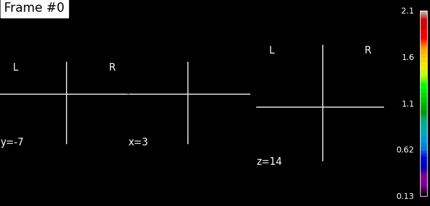

PET scan with motion correction applied. This shows the stabilized sequence.
Original PET scan without any motion correction. Notice the movements affecting the quality.
Overall movement metrics over time.
Rotation components of motion correction.
Translation components of motion correction.